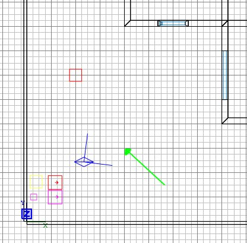
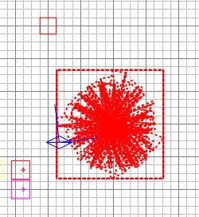
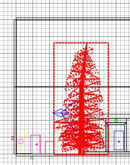
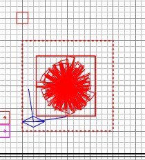
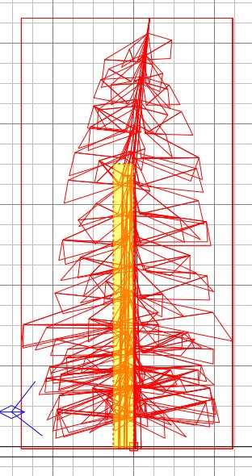
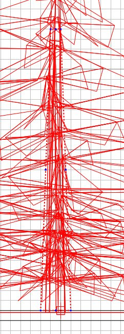
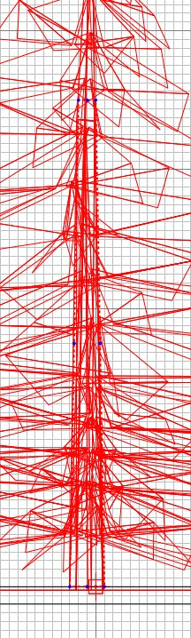

|
Get the overhead view. Press 5
to get a reasonable grid scale. Right
click where shown here:

Click misc/misc_model and a window will
open. Double-click mapobjects then
trees_sd, then tree_a.md3.

Get a side view, and move the tree down
to the ground by click/dragging somewhere
within the actual tree shape, rather than
just somewhere within the box it comes in.

Maybe it's a little too big. Press
N and enter a key of "modelscale"
and a value of "0.8" and press
return.
Ok the tree is about the right size, now
we must add a "clip" brush, which
is a brush that isn't drawn, but will act as
the solid tree trunk to block movement, and
also to give a wooden bullet ricochet noise
if the clip brush is hit.
Press ESC. Get the overhead view
and draw a brush as shown.

Then select Region/Set Tall Brush from
the menu at the top of the screen.
This restricts what Radiant draws to
whatever is inside the box you drew.
The box is deleted as it has fulfillled its
task of indicating the area you are
interested in.
Get a side view and draw a brush as
shown. I've coloured it yellow so you
can see the red dashed outline against the
red model.

Get the next side view, and shrink the
brush to about the right size by pressing 4
to get a better grid scale..
Once the brush is about right, but a bit
lumpy and straight upright, use the Edge
tool and grab the corner blue dots to make
the brush hug the tree trunk up to about the
point where you no longer need clipping, ie
up high in the leaves.

Keep using ctrl+tab to check the 2 side
views as you refine the clip brush.
Use 3 if you want to get the fit
really snug. You can see in the 3D how
you are doing.

Press E when you are satisfied with
it. Then click Textures/common and
click on the Clip Weapon Wood (green/mauve
check) texture. Finally right-click in
the 2D and select Make Detail. This
deselects the brush too.
Ctrl+tab to get the overhead view.
Press 7 to return to a sensible grid
scale. Click Region/Off to see the
whole map again. Save your work.
|